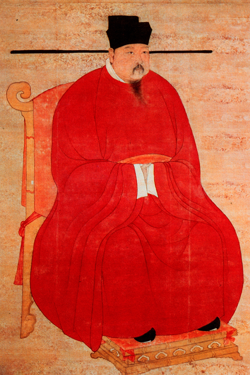

Garment
Coal used for heating one's home was scarce and often expensive, so people often wore clothing with extra silk-floss and fur-lined coats in the winter.The clothing material preferred by the rich was silk, and for special occasions they had silk robes with gold brocade. The clothing material used by the poor was often hempen cloth, but cotton clothes were also used, the latter being most widely available in the south.The types of clothes worn by peasants and commoners were largely uniform in appearance (with color standard of black and white), and so was the case for the upper class and elite.
In fact, wealthy and leading members of society followed accepted guidelines and ritual requirements for clothing. In the upper class, each stratified grade in the social hierarchy was distinguished by the color and specific ornamentation of robes, the shape and type of headgear, and even the style of girdle worn.
This rigid order was especially so during the beginning of the dynasty. However, the lines of hierarchy slowly began to blur as the color purple, once reserved solely for the attire of third rank officials or higher, began to diffuse amongst all ranks of officials who bore the color indiscriminately. Along with lower grade civil officials in the government protesting the rigid regulations for attire, the wealthy members of the merchant class also contributed to the disintegration of rules for ceremonial attire worn only by certain members of society. Yet there were still visible distinctions between civil officials and the class of rich merchants and business owners; the officials were distinguished by their long robes reaching to the ground, while merchants often wore a blouse that came down below the waist with trousers. Pants and trousers were introduced to China during the Warring States in the 4th century BC, and were not exclusive to merchants; every soldier wore trousers as part of his uniform, while trousers were also worn by the common people. Although most men were cleanshaven, soldiers, military officers, and professional boxing champions preferred side-whiskers and goatee beards, a s they were a sign of virility.
The attire of Song women was distinguished from men's clothing by being fastened on the left, not on the right.Women wore long dresses or blouses that came down almost to the knee. They also wore skirts and jackets with short or long sleeves. When strolling about outside and along the road, women of wealthy means chose to wear square purple scarves around their shoulders. Ladies also wore hairpins and combs in their hair, while princesses, imperial concubines, and the wives of officials and wealthy merchants wore head ornaments of gold and silver that were shaped in the form of phoenixes and flowers.
People in the Song dynasty never left their homes barefoot, and always had some sort of headgear on. Shops in the city specialized in certain types of hats and headgear, including caps with pointed tails, as well as belts and waistwraps. Only Buddhist monks shaved their heads and strolled about with no headgear or hat of any sort to cover their heads. For footwear, people could purchase leather shoes called 'oiled footwear', wooden sandals, hempen sandals, and the more expensive satin slippers.